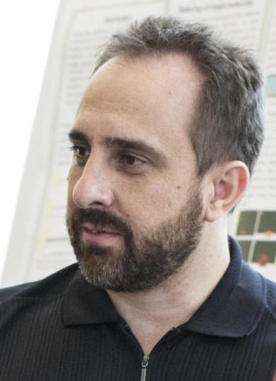

Bryan BergerThe Berger lab seeks to understand the structural basis by which receptors transduce signals across cell membranes. To achieve this understanding, we develop new experimental tools to interrogate receptor structure and dimerization in cell membranes, and use these tools to develop structural models for how receptors interact within a cell membrane. We also use this knowledge to design peptide-based probes that activate or inhibit receptor signaling. Website | Email | Google Scholar |
|
Angel BrownThe Brown lab works to develop strategies to inhibit bacterial pathogenesis, with a focus on inhibition of bacterial toxin activity. We investigate the mechanisms by which bacterial toxins recognize and interact with target cell membranes to identify therapeutic targets. Website | Email | Google Scholar |
|
Javier BucetaThe Buceta lab is focused on Systems Biology approaches towards the understanding of problems at different spatiotemporal scales. Our interests include the understanding of mechanosensitive properties during cell division regulated by membrane channels and the characterization of membrane proteins involved in phage infection. Our methodology combines mathematical modeling, numerical simulations, microfluidics, and microscopy at the submicron scale. Website | Email | Google Scholar |
|
Xuanhong ChengThe Cheng lab is focused on developing new nano-materials and microfluidic platforms that can be used to analyze intact bioparticles, such as cells and pathogens at the point of need. Membrane properties of these bioparticles play critical roles in developing separation and detection strategies. These technologies are also expected to advance fundamental understanding of cell function and pathogen transmission. Website | Email | Google Scholar |
|
Lesley ChowThe Chow lab focuses on the synthesis and fabrication of modular biomaterials for tissue engineering and regenerative medicine. We are particularly interested in developing glycosaminoglycan-based hydrogels that mimic the glycocalyx and extracellular matrix (ECM) microenvironment to influence cell behavior. These biomaterials will expand our understanding of membrane-ECM interactions and potentially lead to new biomedical therapies. Website | Email | Google Scholar |
|
Matthias FalkThe Falk lab investigates the biosynthesis and function of the gap junction forming proteins, connexins, and how cells internalize and regulate their turnover to balance the level of direct cell-cell communication maintained by gap junction channels. In principle, all cells in our tissues and organs have gap junctions and their crucial role for multi-cellular function is demonstrated by multiple diseases that have been linked to mutations in connexins. Their ability to dock head-on in the extracellular space and to cluster into arrays (gap junction plaques) makes connexins particularly interesting membrane proteins. Website | Email | Google Scholar |
|
 |
Kerney Jebrell GloverThe primary concern of the Golver Lab research is the investigation and characterization of membrane proteins and their interactions with the lipid bilayer. Of particular interest to our research group is caveolin1, a membrane protein that is pivotal in the formation of plasma membrane invaginations known as caveolae. Website | Email |
Aurelia Honerkamp-SmithThe Honerkamp-Smith lab uses microfluidics and fluorescence microscopy to experimentally investigate how lipid membranes respond to fluid flow. We explore how flow can sort and align membrane proteins and reveal membrane physical properties. Website | Email | Google Scholar |
|
Wonpil ImResearch in Im lab is focused on the applications of theoretical/computational methods to chemical and physical problems in biology and material sciences. In particular, Im lab is interested in modeling and simulations of biological membranes and associated proteins, glycoconjugates, and protein-ligand (drug) interactions. In addition, Im lab has been developing CHARMM-GUI for the biomolecular modeling and simulation community. Website | Email | Google Scholar |
|
M. Kathryn IovineResearch in the Iovine lab is focused on skeletogenesis in the regenerating zebrafish fin. We have discovered that direct cell-cell communication through Cx43-based gap junctions initiates a gene regulatory network responsible for coordinating skeletal growth (i.e. cell proliferation) and skeletal patterning (i.e. joint formation). Changes in the composition and structure of the extracellular matrix occur downstream of Cx43, and may be responsible for connecting the distinct populations of dividing cells responsible for outgrowth and the differentiating cells responsible for skeletal patterning. Website | Email |
|
Anand JagotaThe organizing theme for the Jagota Research Group is the study of problems in the processing and properties of materials, especially those related to bioengineering. We combine theory and experiments in our work. Our current interests include hybrids of biological molecules and nanomaterials, biomimetic design of surface mechanical properties, and the mechanics of soft materials. Website | Email | Google Scholar |
|
Sabrina JedlickaProfessor Jedlicka’s research revolves around biologically functional material design for use in cell based therapeutics and drug delivery. Biologically functional materials provide the ability to manipulate the direct extracellular environment surrounding cells; influencing their fate and differentiation path. In addition, engineering materials that can be directed using native biological signaling pathways provides a means to direct drug delivery into the central and peripheral nervous system. Website | Email | Google Scholar |
|
Linda Lowe-KrentzResearch in the Lowe-Krentz lab aims to understand control of wound repair in vascular cells. We are particularly interested in signal transduction pathways that involve heparan sulfate proteoglycans, the heparin receptor we recently identified, and its relationship to fluid shear stress signaling. Website | Email |
|
Krystle McLaughlinResearch in the McLaughlin Lab makes primary use of macromolecular x-ray crystallography, along with several biochemical and biophysical methods, to investigate protein structure and function. Research interests involve the study and characterization of protein targets from (1) the commensal human gut bacteria Bacteroides ovatus, and (2) the conjugative plasmids Staphyloccocus aureus pSK41 and Salmonella typhimurium pCU1, (3) the Mycobacterium bacteriophage Butters, and (4) the eukaryotic lynx gene. Website | Email | Google Scholar |
|
Jeetain MittalResearch in Mittal group is centered around broad themes of Biophysics and Soft Matter with a special emphasis on interfacial behavior. In biophysics research, our long-term objective is to develop predictive theoretical tools for the impact of dynamic cellular environment on biochemical processes such as protein folding, protein binding, and protein-DNA interactions. Elucidating the influence of cellular membranes on these processes is an integral part of our studies. Website | Email | Google Scholar |
|
Julie MiwaThe Miwa lab investigates mechanisms of receptor regulation through a set of protein modulators in the brain. These endogenous protein modulators influence receptor assembly and composition, as well as gating properties (e.g. ligand-sensitivity, desensitization kinetics and mean open times, etc.) of ligand-gated ion channels. The influence of these modulators extend to synaptic signaling, plasticity, learning, and behavioral adaptation. Website | Email |
|
Marcos PiresThe Pires laboratory have been carving out a novel path that unites chemical synthesis with microbiology and this powerful combination is opening the door for the chemical interrogation of live bacterial cells. Currently, Dr. Marcos Pires is investigating the remodeling of bacterial cell walls, a process of critical importance both in homeostasis and in pathology, using synthetic cell wall analogs by developing a clever strategy aimed at hijacking the cell wall biosynthetic machinery to install specific probes that can report on modifications by cell wall-linked enzymes. By shedding light on the processes that drive cell wall remodeling, the Pires laboratory will establish how bacterial cells respond to environmental cues. Website | Email |
|
Steve RegenResearch in the lipids and membrane area in the Regen laboratory focus on (i) fundamental studies aimed at understanding the lateral organization of cell membranes using model systems and (ii) the design and synthesis of antibiotics that operate via membrane disruption. Website | Email |
|
Damien ThéveninResearch in the Thévenin lab is organized around: (1) developing novel strategies to specifically target and deliver small therapeutic molecules and peptides to cancer cells and (2) identifying the structural requirements for the oligomerization of receptor protein-tyrosine phosphatases and their effects on cancer cell signaling. As such, our work is applied, fundamental, highly interdisciplinary, and draws upon areas such as peptide and protein chemistry, biophysics, molecular and structural biology, and cancer cell biology. Website | Email | Google Scholar |
|
|  |
Dimitrios VavylonisThe Vavylonis group develops coarse-grained mathematical and computational models in the area of cell biophysics. Recent work with experimental collaborators includes models of local accumulation of proteins on the cell membrane for polarized cell wall growth and cell mating, the interaction of actin cytoskeletal networks with the plasma membrane and the ER during cytokinesis, and actin-polymerization-driven extension of the membrane at the leading edge of motile cells. Website | Email | Google Scholar |
Dmitri VezenovResearch in the Vezenov lab focuses on development of new tools for single molecule and single cell manipulation and analysis. This work is pursued along several objectives: (1) to develop next-generation sequencing technology based on massively parallel single molecule force spectroscopy; (2) to understand and exploit intermolecular interactions between biomolecules and nanomaterials; (3) to understand the role of mechanical properties of cells in their development and viability. Website | Email | Google Scholar |
|
Vassie WareThe Ware lab uses biochemical, cellular, genetic, and molecular approaches to pursue two major research goals: (1) to understand the differential expression and function of Drosophila melanogaster eRpL22 ribosomal protein paralogues to determine if paralogues specify heterogeneous populations of ribosomes with specialized functions in translation and/or if novel or extraribosomal protein functions can be identified; (2) to characterize the role of novel mycobacteriophage-encoded membrane proteins in bacterial defense mechanisms against viral attack. Website | Email |
|
Nathan WittenbergThe Wittenberg Lab focuses on analytical chemistry applied to biological systems. We are developing new analytical methods for monitoring biomolecular interactions on surfaces, with a number of applications in neuroscience. We are also building microfluidic and nanofabricated platforms for detecting molecular transport in membrane-bound biological nanostructures like extracellular vesicles, secretory vesicles, and synaptosomes. Website | Email | Google Scholar |
|
Frank ZhangXiaohui "Frank" Zhang leads leads an interdisciplinary Lehigh research team that integrates physics, immunology and biology toward the development of a nanodevice that could provide a new treatment to a host of human disease. His team specializes in mechanosensing -- how cells sense and respond to mechanical stimuli. Their efforts focus on the biomechanical mechanisms of protein folding, conformational change and protein-protein interactions. Zhang’s group is also active in the development and application of single-molecule force spectroscopic approaches to study cell adhesion and migration. website | Email | Google Scholar |